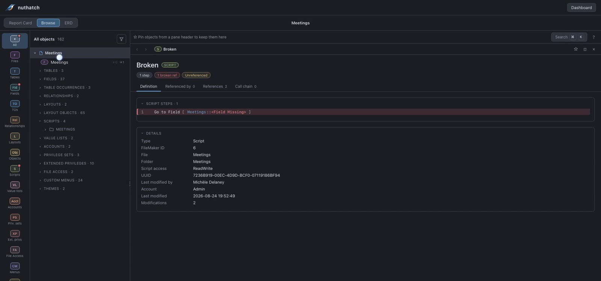
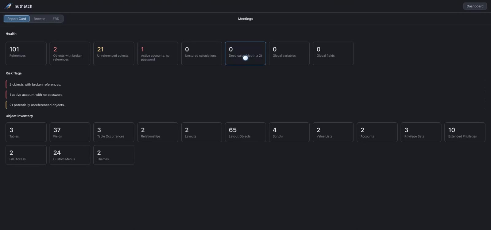
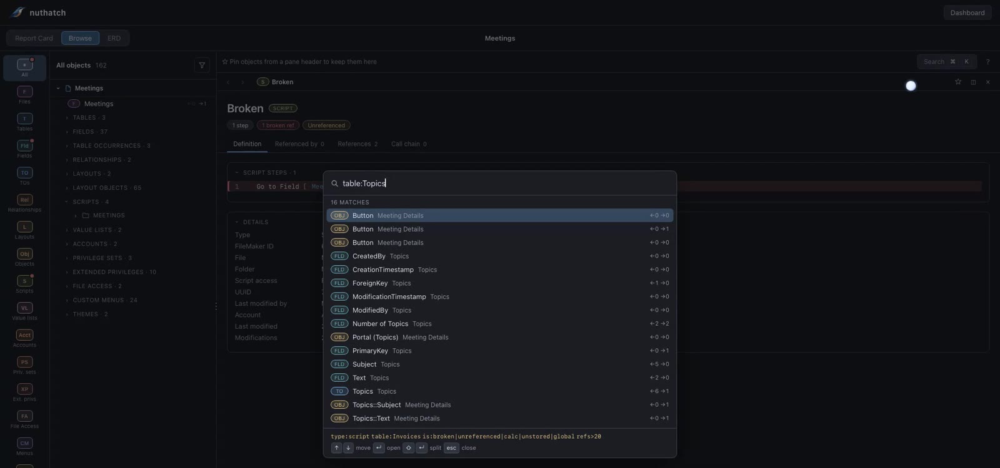
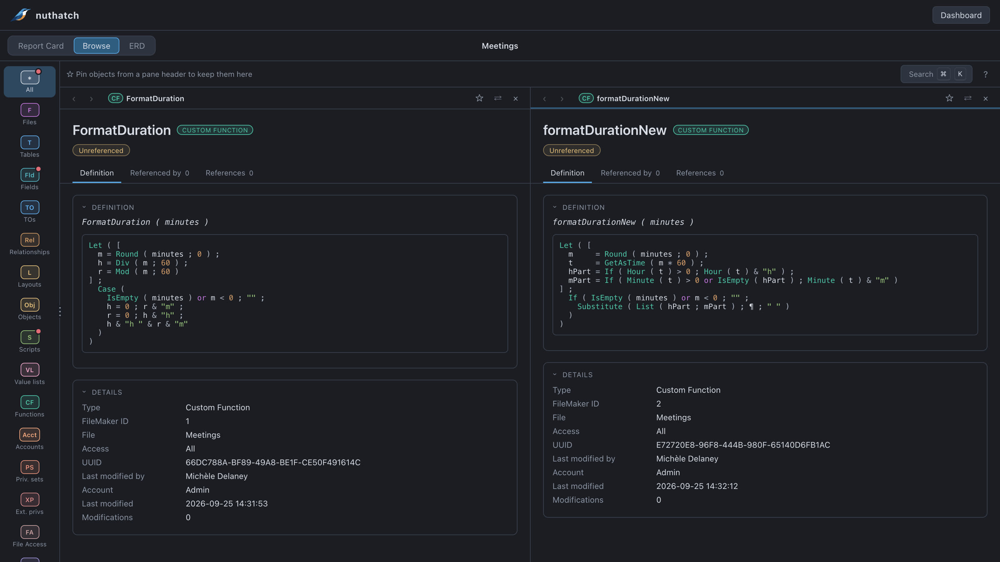
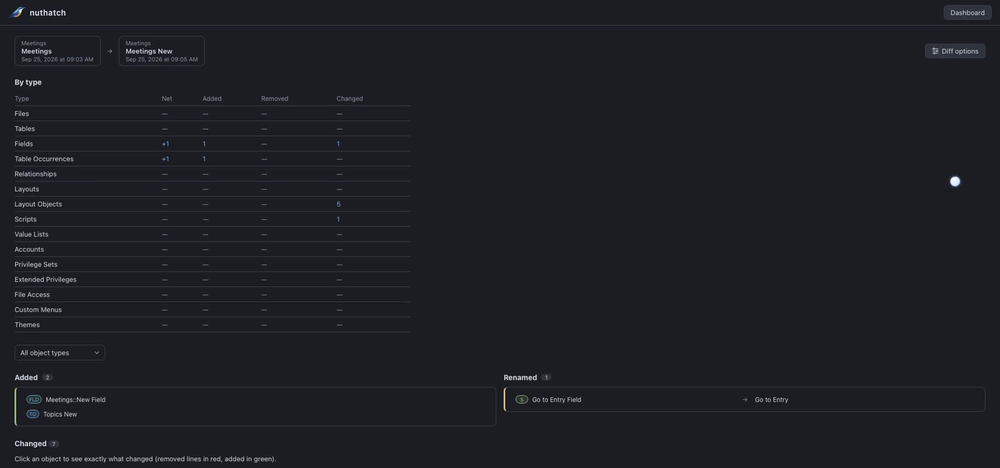

Start from what's wrong
The report card counts broken references, unreferenced objects, accounts without a password, and unstored or deep calculations. Click any number to see the objects behind it.

nuthatch is a static-analysis tool for FileMaker “Save a Copy as XML” exports. Explore structure, dependencies, call chains, and maintenance risks, all parsed locally. Nothing is uploaded.

The report card counts broken references, unreferenced objects, accounts without a password, and unstored or deep calculations. Click any number to see the objects behind it.

Search names, calculations, and script steps across every loaded file. Filters like
type:script, is:unreferenced, or refs>20
narrow it down.

⇧-click a search result or a reference to open it in a second pane. Collapse the navigator when you need the room, like here, comparing two versions of a custom function.

Save an analysis, export again later, and compare. Renamed objects stay matched, and changed scripts and calculations show a line-by-line diff.

git clone https://github.com/micheledelaney/nuthatch.git
cd nuthatch && npm install
npm run build && npm run previewA desktop build (Tauri) is also available: npm run tauri:build. See the README for details.
Bugs and requests go in GitHub issues. For anything else, email c.michele.delaney@gmail.com.